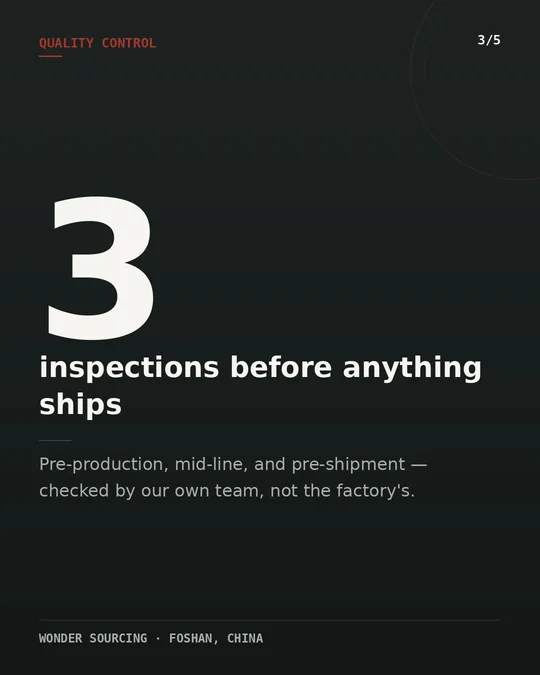
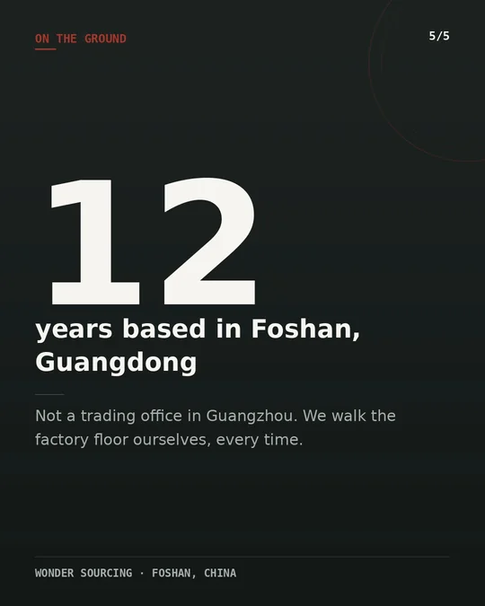

Foshan is where the furniture already is.
Most buyers hear "furniture from China" and picture Guangzhou or Shenzhen. The actual production base sits an hour further west, in Foshan's Shunde and Lecong districts — home to the largest concentration of furniture factories and wholesale markets anywhere in the world.
Three districts, three specialities.
Foshan's furniture industry isn't one factory zone — it's split into districts that each grew around a different material and trade. Knowing which one makes what is most of what a sourcing agent is actually for.
Lecong, Shunde
Home to Lecong Furniture City, a wholesale market spanning thousands of showrooms — the largest furniture trading hub in the world by floor area. Strong in case goods, dining and bedroom sets.
Shunde central
Dense cluster of upholstery workshops supplying both residential and hospitality contracts, with fabric and leather sourced from mills within the same district.
Longjiang, Shunde
Known for outdoor and rattan furniture production, serving resort and F&B projects across Southeast Asia directly — a short logistics hop from the ports we ship to.
Chancheng, central Foshan
Where trading companies, freight forwarders and our own office are based — the administrative layer that ties the surrounding production districts together.
What buyers usually discover after landing in the wrong city.
Guangzhou and Shenzhen have furniture trading offices, but the factories themselves — and the price advantage of buying near the production line — sit in Foshan.
| Buying via Foshan | Buying via a trading office | |
|---|---|---|
| Factory access | Direct, on foot, same day | Through an intermediary, often video-only |
| Pricing | Factory FOB, no added layer | Trading company margin built in |
| Lead time on delays | Resolved same afternoon | Days, waiting on a relayed answer |
| Material range in one trip | Wood, upholstery & rattan across 3 districts | Limited to what the office represents |
Material categories in production across Foshan.
Dining & case goods
Oak, ash and teak-look frames from Lecong workshops built for export packing.
Sofas & seating
Fabric and leather seating lines serving hospitality and residential contracts.
Outdoor & resort
Weather-rated pieces built for coastal resort and F&B projects.
Office & commercial
Steel-frame seating and glass-top tables for office and retail fit-outs.
Mattresses & storage
Bed frames, wardrobes and mattress lines for hotel and residential volume orders.
Complementary lines
Lighting and soft furnishings sourced from the same supplier network as an add-on.
The furniture calendar, if you want to see it yourself.
If you'd rather walk the floor before committing to an order, these are the two windows the trade builds its year around.
China International Furniture Fair (Guangzhou) — Foshan supplier presence
Many Foshan factories exhibit here rather than run their own stand-alone events; we arrange factory visits either side of the fair dates.
Lecong Furniture City showrooms
Open year-round, so a buying trip doesn't need to be timed to a trade fair — we schedule visits around your own travel window.
Peak production season
Factories run at highest capacity ahead of year-end holiday retail demand — worth planning around if your order is time-sensitive.
Foshan, in five cards.
Scroll through the scale of the district, how we vet it, and where the containers land.




